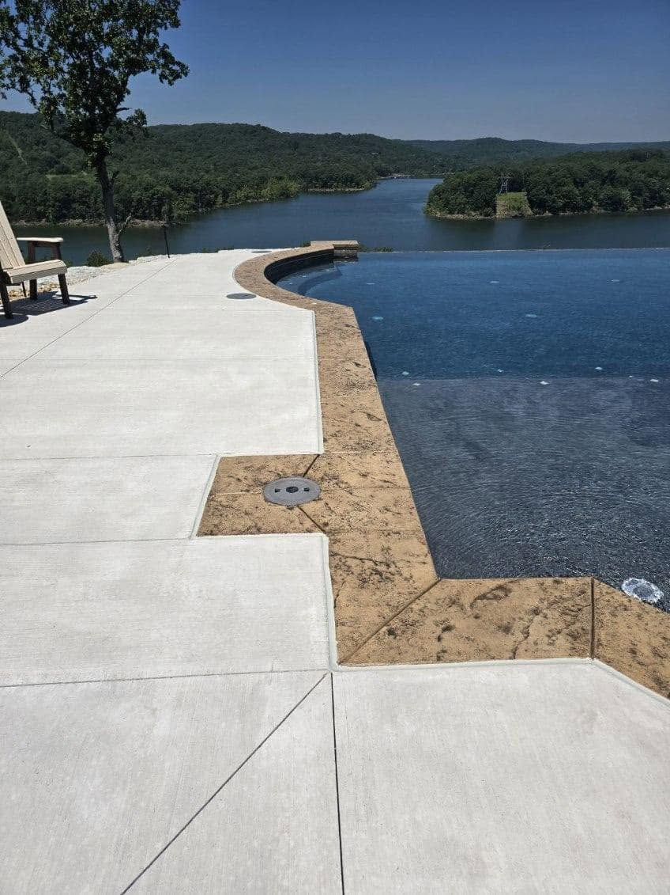

01
Masonry Repair
Repair cracked, loose or damaged brick, stone and block while preserving the look of the existing structure.
Explore masonry repair →.png)
ESE Seal repairs the cracks, mortar, masonry, concrete and water-entry points that can turn into expensive problems. Owner Eric Enlow brings decades of hands-on restoration and weatherproofing experience to homes and businesses across Southwest Missouri.


Water, freeze-thaw cycles, settling and age can break down mortar joints, crack masonry and open pathways for moisture. ESE Seal focuses on finding the real failure point, repairing it correctly and leaving the finished work clean and intentional.
ESE Seal is intentionally broader than a single-service waterproofing company. That matters because cracks, failed mortar and water intrusion are often connected.
Repair cracked, loose or damaged brick, stone and block while preserving the look of the existing structure.
Explore masonry repair →Remove deteriorated mortar and replace it with properly tooled joints to restore strength and appearance.
Explore tuckpointing →Address cracked mortar, damaged brick and weather-related deterioration around chimneys and fireplace masonry.
Explore chimney repair →Repair accessible cracks in poured concrete and masonry foundation walls and address vulnerable entry points.
Explore foundation repair →Identify common water-entry points and apply repair and sealing solutions appropriate for the structure.
Explore waterproofing →Restore damaged concrete flatwork and problem areas where cracking, wear or moisture have compromised the surface.
Explore concrete repair →A masonry repair is more than filling a crack. Matching materials, shaping mortar joints, controlling water and understanding how the wall was built all affect how the finished repair performs.
Call, email or send a quote request with a description of the crack, leak or damaged masonry.
Eric evaluates the condition, identifies likely causes and explains the recommended repair approach.
The affected area is prepared and repaired using materials and methods appropriate for the structure.
The repair is finished with attention to appearance, weather exposure and the surrounding work area.
Public HomeAdvisor and Angi reviews repeatedly mention Eric's responsiveness, workmanship and ability to repair masonry without turning every problem into a full replacement project.
Homeowners have praised Eric for repairing cracked brick and mortar professionally and courteously, with results they would hire him for again.
Springfield-area masonry customerOne chimney customer specifically noted that Eric offered a practical repair solution after receiving a much more expensive replacement-style estimate elsewhere.
Southwest Missouri chimney customerMultiple reviews mention clear communication, arriving when expected, keeping the work area organized and completing projects as promised.
Verified homeowner feedbackESE Seal serves homeowners and property owners throughout the Springfield area and surrounding communities. If your town is not listed, call and ask about your project.
Send ESE Seal the details and request a free estimate.